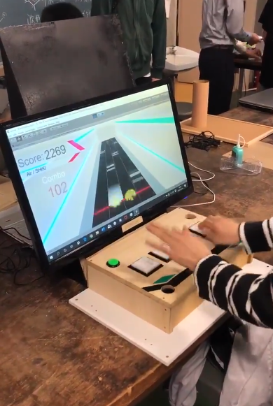
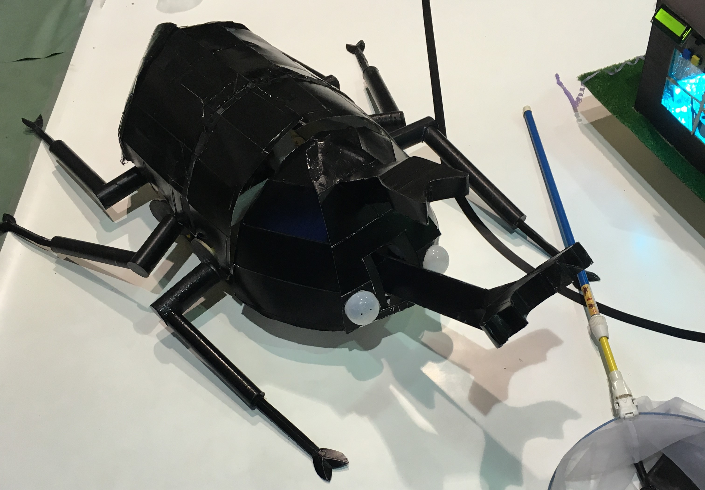

About Here
HTMLのTESTページです
将来的には個人制作物に関することを書いていこうと思います。
音ゲー自語りページ : MusicGame
About Me
音楽ゲームを嗜む情報系(弱い)学生です。
登山が趣味だったりします。目標は百名山登頂制覇です。(現在 1/100)
略歴
- 2015.3 川崎市立某小学校 卒業
- 2018.3 川崎市立某中学校 卒業
- 2021.3 東京工業大学附属科学技術高等学校 情報システム分野 卒業
- 2021.4 東京都市大学 知能情報工学科 入学
触れたことのある言語(&フレームワーク)
- C
- C# (unity)
- Dart (Flutter)
- Arduino
- HTML & CSS
高校時代の製作物
ゲームエンジンUnity、およびArduino Leonardoを用いてゲームとコントローラを自作し、文化祭で自主活動として展示しました。
後日プレイ動画 → https://www.youtube.com/watch?v=MPh_ZoqeVxU

▲ 文化祭で展示した『Lawine』
SSH教育の授業の一環として、Google社のFlutterというフレームワークを使い、周囲の音を音声認識で拾い、アプリ利用者に危険時に通達するアプリの開発にチームで取り組みました。
最終発表時には、利用者が名前が呼ばれた際に通知するところまで研究が進みました。

▲ 通知中のアプリ画面
高校時代の部活動で、マイコン(Arduino等)で制御する競技ロボットを製作しました。
被災者に見立てたボールの救助を行う大会や、パフォーマンスを行う大会に向けたロボットをチームで製作し、後者の大会では写真のロボットが13チーム中3位に入賞しました。

▲ カブトムシをモチーフとしたロボット『カブトキング』
Link
Twitter :
@syg_74
Youtube :
せよぎ
Github :
seyogi